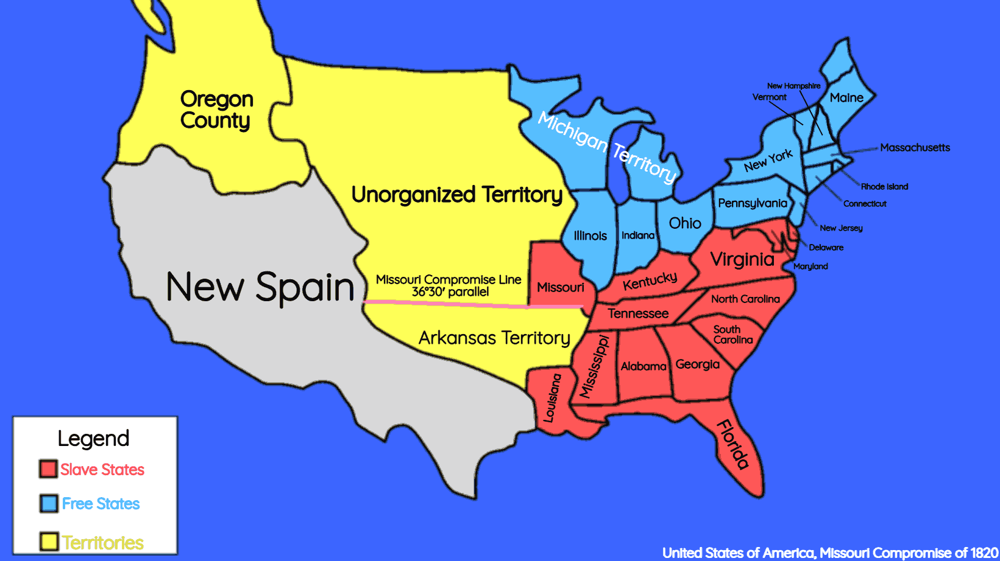
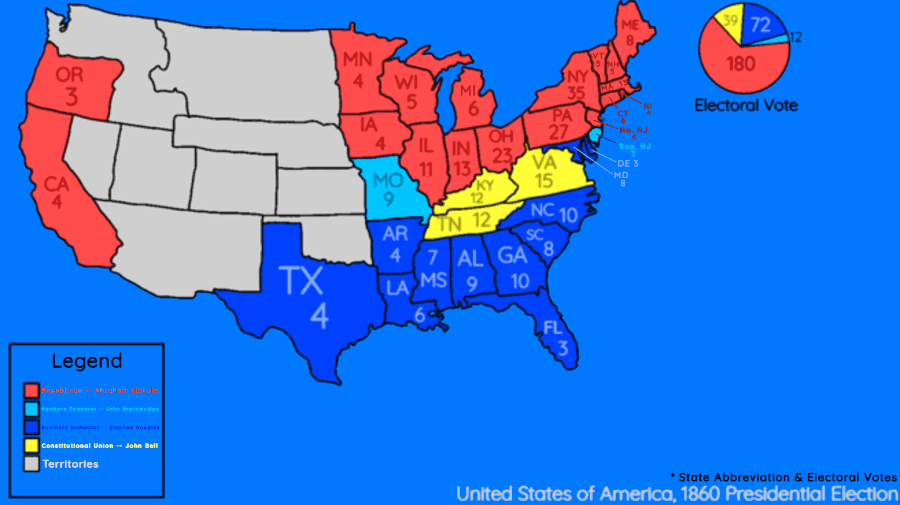
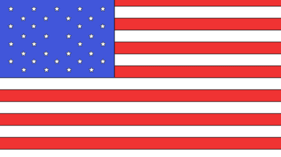
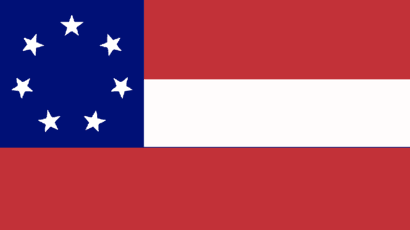

The American Civil War was the bloodiest war fought within the United States that lasted between 1861 to 1865, which was the result of opposing views on slavery between the northern and the southern states. After the Louisiana purchase, the issue of slavery stated to emerge which led to many compromises trying to solve it. But these only postponed the issue of slavery and after Lincolns presidency in 1861, 11 states seceeded from the Union and formed The Confederacy.
The Missouri Compromise, proposed by Whig Politician Henry Clay and signed by President James Monroe on March 6, 1820, was the first attempt to maintain the balance bewteen slave and free states. The Missouri Compromise admitted the state of Missouri as a slave state and Maine as a free state.

The compromise also established a line 36°30' north where land in the Louisiana Purchase north of the line is prohibited to slavery. The Missouri Compromise although calmed the tensions of slavery between the North and South didn't stop the conflict as more states were admitted into the Union.
The Compromise of 1850 was Clay's second attempt at maintaining slavery in the United States. The Comprmise was passed by Congress and signed by President Zachary Taylor in September 1850 and unlike the Missouri Compromise, was a group of bills that were proposed.
Popular Sovereignty: The political principle that allows the citizens of a state to decide on if a practice should be allowed or not.
Abolitionists: People who wanted to end the institution of slavery in the United States.
Pro-Slavery Settlers / Anti-Abolitionists: People who opposed abolitionists and defended slavery.
Institution: An established practice, custom, or law.
The first bill of the Compromise of 1850 stated that the newly formed state of California should be a free state just like Maine from the Missouri Compromise.
The second bill of the Compromise of 1850 stated that the territories of New Mexico and Utah allowance of slavery is dependent on what the citizens of these states thought about it, a political principle called popular soverignity.
The third bill of the Compromise of 1850 settled the border dispute between New Mexico and Texas where the former gave up land to the latter and the federal government paid off the debt.
The fourth bill of the Compromise of 1850 prohibited any slaves from being bought and sold in Washington D.C, in an attempt to balance slavery in the United States.
The fifth bill and the most notable bill of the Compromise of 1850, called the Fugitive Slave Law of 1850 provided more strict laws that were focused on slaves. Runaway slaves were considered as fugitives as anyone who was thought to be escaping enslavement and those who helped them were arrested and couldn't have a state or local court but instead a federal court. Due to this act, many Northeners violented rebelled and condemned the law.
When the problem of slavery first emerged, Americans were divided by their beliefs related to slavery. Abolitionists were people who have actively tried to end slavery as a practice in the entirety of the United States. Pro-Slavery or anti-abolishment settlers were people who defended the institution of slavery from ending. The most amount of abolitionists were in the north-east in the states of Massachusetts, Connecticut and Rhode Island while the most pro-slavery settlers resided towards the middle east in the states of Missouri and Kentucky.
The Kansas-Nebraska Act of 1854 was the third attempt to balance slavery. Due to the Compromise of 1850, slavery quickly began to become the nations biggest issue. Proposed by Democratic Senator Stephen Douglas in Janurary 1854 then passed by President Franklin Pierce on May 30, 1854, the Kansas-Nebraska Act made slavery in the states of Kansas and Nebraska up to popular soverignity. This act violated the Missouri Compromise as Kansas and Nebraska were both lands from the Lousisana Purchase which was restricted from slavery. Many Northern Democrats despised the act and helped the division of the Whigs and weakened the Democratic party. The Whigs were divided on the question of slavery, Northern Whigs disproved of the act because it repealing the Missouri Compromise while the Southern Whigs supported the act because it solidified slavery even more. This split in the Whigs party eventually divided the party into seperate regions. Many Northern Whigs came together and formed the party in a response to the Kansas-Nebraska act and the Whig party dissolved. The democratic party faced a similar split of the opinion of slavery as the act made by Douglas was meant to rally the democrats but Northern democrats opposed the act while Southern democrats supported it. This act caused many internal battles within the United States such as the Bleeding Kansas, and eventually leading up to the American Civil War.
Bleeding Kansas was a series of battles within Kansas from 1854 to 1859. Due to the Kansas-Nebraska Act of 1854, the citizens of Kansas violently fought each other for either the allowance or abolishment of slavery in their own state. One particular battle part of Bleeding Kansas was the Pottawatomie Massacre, where on the night of May 24, 1856, abolitionist John Brown led five of his sons and three others into killing five pro-slavery men until the next day in an attempt of intimidation. This killing spree made many pro-slavery families fear Brown's attack and moved away and started the killings in Bleeding Kansas. On October 14, 1859, John Brown and 18 others raided a federal armory called Harpers Ferry and faced many losses and got captured. Brown after the attack was then executed on December 2, 1859 and became a martyr which ralied the abolitionists even more against slavery. In total, there were 55 deaths related to Bleeding Kansas, and the state itself was admitted as a free state in Janurary 1861.
The Dred Scott decision is considered to be the most infamous rulings of the US Supreme Court. Dred Scott himself was an enslaved man that was prosecuted because he was living in a free state (slavery was prohibited). On March 6, 1857, the Supreme court ruled in the favor of John Sandford and according to the majority opinion of the court read by Chief Justice Roger Taney, enslaved people were not considered official citizens of the United States, stated that the Congress couldn't ban slavery, and that slaves couldn't seek protection from the federal government or the courts and were deemed property by the fifth amendment. Later, the many conditions imposed on slaves from the Dred Scott case were nullified by the 13th and 14th amendments later passed.
Abraham Lincoln was the 16th president of the United States and before that (for 2 presidental terms) for the Union. Before the civil war, Lincoln was a Whig before becoming a Republican. When the Civil War first started, his two main goals at first was to keep the Union together and the second goal (later developed over the course of the civil war) was to end the practice of slavery.
Jefferson Davis was the first and only president of the Confederate States of America. Before his presidency, he represented the state of Mississippi in the House of Representatives and was a Senate in the same state. After Mississippi's secession from the Union on Janurary 9, 1861, Jefferson won the presidential election alongside Democrat Alexander Stephens as vice president and led the Confederate States through the American Civil War against the Union.
The Lincoln-Douglas Debates were seven notable political debates from August 21, 1858 to October 15, 1858 between Abraham Lincoln and Stephen Douglas for the position of being an Illinoisan Senate. In the end, Douglas was the winner of the debates and became a Senate, however Lincoln gained national respect which would help him in the president election two years later.
For the upcoming presidental election of 1860, that took place on November 6, 1860, four manjor candidates were seen trying to win. The four representatives were a result of the division of the Democratic Party seperated by the Northern and Southern Factions of it and the formation of the Constitutional Union Party by Southerners who didn't support the Republican or Democrat party and solely relied on the constitution.
Abraham Lincoln was a political representative for the state Illinois in the House of Representatives and represented the Republican Party. He wanted to stop the spread of slavery in new states and territories.
John Bell was a former senate of Tennessee, a former Whig and Democrat, and then eventually a member and nominee of the Constitutional Union Party. He didn't want to abolish slavery as he saw the institution constitutional, but like Lincoln wanted to stop the spread of it.
John Breckinridge was the 14th vice president of the United States, formally under President James Buchanan, and represented the Southern Faction of the Democratic Party. His party wanted Breckinridge to insure that slavery would be protected by the federal government.
Stephen Douglas was a former senate of Illinois (after the Lincoln-Douglas Debates) and represented the Northern Faction of the Democratic Party. He wanted slavery to be left up to popular soverignity without federal intervention.
In the end, Abraham Lincoln won the election with 180 electorial votes with Breckinridge having 72, Bell having 39 and Douglas having 12. In southern states, Lincoln's name wasn't shown on the ballot and the Confederacy would be formed in response of Lincoln's election.

The Crittenden Compromise, proposed by John Crittenden on December 18, 1860, was a failed compromise meant to keep the southern states in the union. The compromise reintroduced and expanded the 36°30' parallel line from the Missouri Compromise and had many constitutional amendments along with it. Ultimately, Republicans rejected the compromise and was dismissed by southerners.
Shortly after the election of President Lincoln, the southern states were afraid that Lincoln's presidency would endanger slavery. Two days after the the Crittenden Compromise was introduced, South Carolina seceeded from the Union, forming the Confederacy and using states' rights to justify the secession. Two months later in Feburary 1861, Alabama, Florida, Georgia, Lousisana, Mississippi, and Texas had all secceeded and joined the Confederacy.


Soon in early April 186 of 1861, President Lincoln requested supplies to be brought to Fort Sumter as it was running low on supplies and Confederate forces were demanding the Union soldiers to surrender. On April 12, 1861, Confederate forces led by General P.G.T (Pierre Gustave Toutant) Beauregard fired upon Fort Sumter, a now Union federal armory within South Carolina. The Fort was severely damaged from the gunfire and artilery fire and 34 hours later, Union General Robert Anderson and his forces surrendered and fled the fort, marking the Battle of Fort Sumter as a Confederate victory. After Fort Sumter's collapse, the states of Arkansas, North Carolina, Tennessee, and Virginia all seceeded between April and June of 1861.
After the Battle of Fort Sumter, President Lincoln ordered the Union states to assemble an army of 75,000 soldiers. On July 21, 1861, 35,000 Union soldiers under Irvin McDowell fought 20,000 Confederate troops led by Beauregard and additional support from Thomas J. Jackson in Manassas Junction, Virginia called the First Battle of Bull Run (or Manassas). Both sides of the battle weren't exactly experienced or prepared for war and Union forces were planning to flank Confederate forces but were delayed due to poor coordination. In the end, McDowell and Jackson's army managed to force the Union soldiers to retreat, causing hundreds of Dowell's soldiers to run into citizens from Washington who were watching the battle. The loss of the Union ended any hope for an easy victory on both sides of the war.
On November 1st, 1861, President Lincoln replaced Winfield Scott with George B. McClellan as the General in Chief.
When the American Civil War began, both the North and South had different goals to end the war. One of the goals for the Union was to gain control of the Mississippi River, this would effectively split the Confederacy in half and make transporting resources and soldiers difficult. Abraham's two goals were to preserve the Union itself (by making the Confederate States surrender) and later on end slavery. The Confederate's goal was more simple, it wanted to stall the war until the North would deem the war as too costly to continue, if this happens, the Confederate States of America would not only be recognized as an independent country seperate from the North, but slavery can also continue without the Union's interference.
After Union victories in both Fort Henry and Donelson, on April 6, 1862, in Pittsburgh Landing, Tennessee, around 44,000 under General Albert Johnston and ambushed Union forces under both Maj. General Ulysses S. Grant at dawn becoming the Battle of Shiloh (or Pittsburgh Landing). The Confederate soldiers at first seemed to overwhelm the Grant's army, forcing them to retreat to Pittsburgh Landing. After several more fights occured around Pittsburg Landing, sometime in the afternoon, Johnston was shot in the leg, severely injuring him and dying, causing Beauregard to now be under control of the remaining Confederates. By midnight, Grant recieved reinforcements from Maj. General Don Buell and by the next day, the combined Union army counterattacked the Confederates, pushing Beauregard's army to Shiloh Church, and eventually retreating to Corinth. On both sides, around 23,000 casualties were reported and the Union was one step closer to the Mississippi River.
About two and a half weeks from the Battle of Shiloh, on April 25, 1862, Union Navy Admiral David Farragut and his navy having traveled to New Orleans, Louisiana, forced the city to surrender. Three days later, without fighting, the city surrendered under Farragut's forces. And three more days later on May 1, 1862, Union Major General Benjamin Butler's army arrived and captured the city of New Orleans, the biggest Confederate city.
On June 1st, 1862, Robert E. Lee gained command over the Army of Northern Virginia and wanted to intercept McClellan's army from capturing Richmond, the Confederacy's capital. Between June 26 to July 1, 1862, the battles of Oak Grove, Beaver Dam Creek, Gaines' Mill, Garnett's and Golding's Farm, Savage's Station, White Oak Swamp, and Halvern Hill all took place between the Seven Days Battles and eventually Lee's army managed to repel McClellan's army repel from Richmond and continue his journey into Maryland.
After his victory in Seven Days Battles, Lee continued to travel to Maryland and on August 29, 1862, he sent Stonwall Jackson's army to weaken Union General John Pope with around 70,000 union troops. Throughout the afternoon, Pope launched several attacks towards Jackson's army, breaching the army's front several times but being pushed back every time. Later in the afternoon, Lee recieved reinforcements from Lieutenant General James Longstreet but never attacked Pope's army. By the next day at noon, Pope decided to pursuit Lee's army mistakingly thinking that his army was retreating and launched another attack. The attack included both Union General Fitz-John Porter's and McDowell's corps, but even with three Union armies, the Confederates successfully defeated the Union armies and drove them away to cross Bull Run.
The Battle of Antietam was the bloodiest day in the American Civil War. On September 17, 1862, the Army of the Potomac, the leading Union army in the East led by McClellan encountered Lee in Antietam Creek, Maryland. Lee's plan in Maryland was to "liberate" the state and move to Washington D.C, the capital of the Union to capture it. The Battle of Antietam only took twelve hours but saw 23,000 casualties. The Union successfully drove Lee away from Maryland into Virginia, however McClellan didn't pursuit Lee's defeated army and Lincoln then replaced him with Henry Halleck as General In Chief.
The Emancipation Proclamation was a statement issued by President Lincoln on Janurary 1, 1863. The proclamation declared that any slave in rebellion against the United States were free from slavey. This caused many African Americans to join the Union and fight the Confederacy (54th Massachusetts for example). Over 200,000 African Americans fought for the Union.
After his defeat in the Battle of Antietam, Lee's army fought another Union army under Major General Joseph Hooker. Lee had split his army into two wings where Longstreet and Stonewall Jackson would command on May 1st and planned to suprise the Union army. On May 2nd, Jackson's army who were in hiding, came out and ambushed the Unionists, who were eventually defeated and forced to retreat. Then on May 3rd, Lee's cavalry chief, Jeb Stuart bombarded the Unionists with his brigades, severely injuring the formers until they retreated to Stafford County on May 6. Although this battle was considered Lee's greatest victory as he defeated an army with nearly twice as much soldiers as his, Stonewall Jackson had been critically injured by accident and died four days after the Unionists retreat. His death greatly demoralized the Confederacy and Lee traveled further up north.
While the Battle of Gettysburg was still ongoing, the Siege of Vickburg has been started since May 18, 1863. At first, from May 18 to May 22, Union General Ulysses Grant tried to overwhelm the Confederate front led by Lieutenant General John Pemberton at Vickburgs but was unsucessful. Then from May 23 to July 4 resorted to siege the city of Vicksburg, significantly weakening the Confederate army. Then on the last day of the siege, July 4, Pemberton's army surrendered to Grant.
After the Battle of Chancellorsville, Lee traveled to a town named Gettysburg, Pennsylvania still wanting to push further north to hopefully capture Washington D.C. On July 1, Longstreet and two other Confederate Lieutenant Generals under Lee named Richard Ewell and Ambrose Hill Jr. fought Union General John Reynolds, Major General Abner Doubleday, and General Oliver Howard under George Meade, the (new) commander of the Army of the Potomac and drove them south through town this resulted in the death of Reynolds. On July 2, the Confederate Generals continued to attack the Unionists, hoping to collapse the formation of them but they held out these attacks. On July 3, many Confederate soldiers under Major General George Pickett's army rushed the Unionists at Cemetery Ridge in what is now known as the Pickett's Charge but failed to disrupt the Unionist's army front. Now with many casualties, Lee's army retreated to Maryland then to Virginia. The Confederate defeat at Vicksburg opened up the Mississippi River for the Union to capture, this divided the Confederacy into two.
On August 16, 1863, Union General William Rosencrans, leading the Army of the Cumberland, set out to capture the city of Chattanooga. On September 9, 1863, Confederates left Chattanooga in an attempt to trap Rosencrans' army. The army occupied the territory and reinforcements from the Longstreet's Corps under General Braxton Bragg surprised the Unionists and defeated Rosencrans' army in the Battle of Chickamauga as they retreated to Chattanooga. Bragg decided to besiege the city of Chattanooga hoping that the Unionists would eventually surrender. However Ulysses Grant's army successfully freed the sieged soldiers and defeated the Confederates. The Unionists then captured the city of Chattanooga shortly after. Lincoln would also make Grant the General of the Army after this in 1864.
The Siege of Petersburg was Grant's attempt of taking over Richmond, Virginia. Even though Grant had more soldiers, Lee successfully held against these attacks. Seeing the defeats of the Unionists, Grant besieged Lee's army within the town of Petersburg, Virginia for 292 days, cutting off any supply and communication lines to Richmond.
The battle of Atlanta was the largest battle of the Atlanta campaign fought by Major General William Sherman and his army and led to the capture of Atlanta under Union forces. Sherman's reason of capturing Atlanta was to cut off Confederate supply lines, capture Atlanta and destroy the Army of Tennessee in the campaign. On July 22 and 28, 1864, Sherman fought Confederate Lieutenant General John Hood's army in Fulton County and Ezra Church, and on August 1, Hood was forced to abandon Atlanta. Sherman's capture of Atlanta not only led to his March of the Sea but also helped Lincoln win the 1864 Election.
The 1864 United States Election took place on November 8, 1864. Lincoln was chosen as a candidate again and was against McClellan. The election endangered the Union itself as Lincoln losing means the end of the Civil war and the continuation of slavery. But due to Sherman's capture of Atlanta, Lincoln easily won the election with 220 electoral votes and passed the 13th amendment soon after.
Soon after Lincoln's re-election, he passed the 13th amendment. Unlike the Emancipation Proclamation, the 13th amendment prohibited slavery in the entirety of the United States, not just the states in rebellion of the Union...
Neither slavery nor involuntary servitude, except as a punishment for crime whereof the party shall have been duly convicted, shall exist within the United States, or any place subject to their jurisdiction.
Congress shall have power to enforce this article by appropriate legislation.
Sherman's March to the Sea (also called Savannah Campaign) was Sherman's long path to the city of Savannah. During his campaign, Sherman and his 60,000 soldiers destroyed and burned everything that belonged to the Confederacy like buildings, weapons, crops, livestocks, etc. Finally on December 21, Sherman captures Savannah.
In April 9, 1865, Lee's army was on the run after the Battle of Appomattox Station. Being sieged by Grant for 292 days significantly weakened his army as he was slowly being surrounded by Unionist cavalry. Finally on the same day, Lee surrendered, not wanting to sacrifice his army for nothing.
After Lee's surrender, The Supreme Court didn't consider that the American Civil War actually ended until August 20, 1866 after President Johnson declared that, "peace order tranquility and civil authority now exist in... the whole of the United States of America". Five days after Lee's surrender, President Lincoln was assassinated in Ford's Theatre by John Booth.